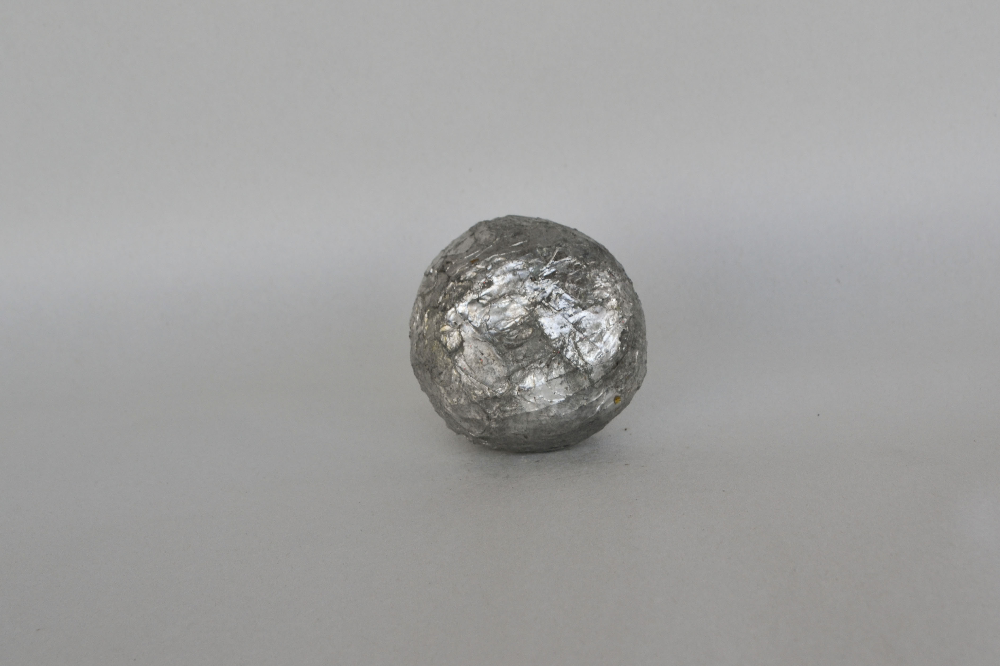
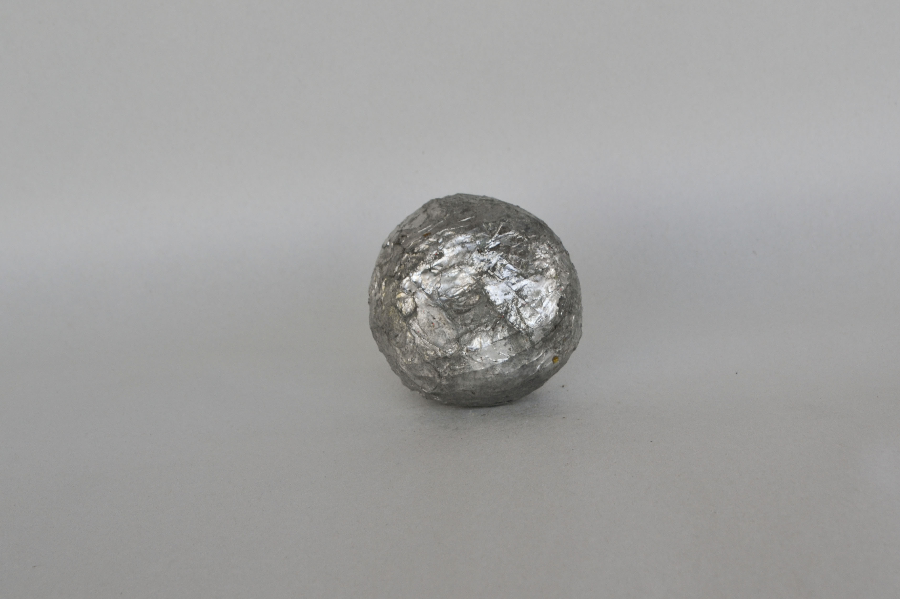
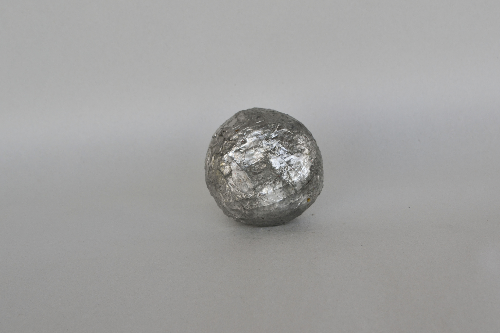

Fruit Preserves is an exploration of decay and protection. I have encapsulated fruit including apples, lemons, pears, clementines, and strawberries, inside of shells made from various materials. While the materials that envelop the fruit may range from metal solder to wax to enamel paint, the fruit are protected to various degrees. Some fruits are protected in a hard shell, while others remain soft and malleable. The project was an effort to save the fruit from decay, and protect them from their decomposition. Ultimately though, the fruit could not be saved. Even the coatings that seem to be airtight have sticky juices and residue seeping to the outside of the shells. The fruit are mummies as well as votives, preserved to a degree and presented as tokens that resist decay.
*

4 Clementines clementines, copper foil, metal solder
Clementine Punctured by Pins clementine, pins, wax, wire
Soldered Clementine clementine, copper, metal solder
Lemon in Clay Casing lemon, epoxy clay, studio debris
Soldered Apple apple, copper foil, metal solder
Apple in Debris Casing apple, gold glitter, sawdust, baking soda, coffee, wax, poultry staple
Enamel Lemon lemon, enamel, poultry staple
Soldered Clementine with Pins clementine, copper, metal solder, pins
Withered Lemon with Clay Casing lemon, epoxy clay, poultry staple
Apple with Pins in Salt Casing apple, pins, salt, glue
Clementine in Solder clementine, copper, metal solder
Clementine in Debris Casing clementine, sawdust, baking soda, glitter, studio debris, poultry staple, glue
 
